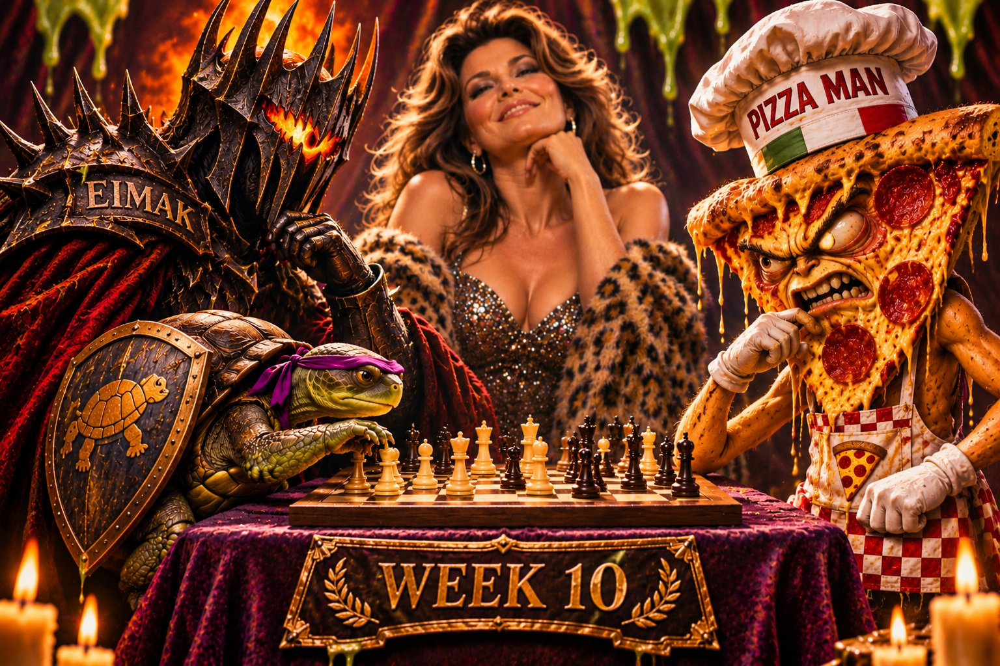

Hear ye, degenerates. Eimak has shed his oracle robes and returned in armor forged from the ashes of a thousand bad waiver claims. He has not come to bring peace. He has come to witness a 7-2 turtle challenge an 8-1 pizza-adjacent tyrant, while Shania Twain watches the entire league confuse fantasy football with a constitutional crisis.
Six matchups. Twelve teams. One extremely loud argument about who deserves to sit on a throne made entirely of projected points.
SHOW ME THE TURTLES (7-2) vs. SERVING KUENTZ (8-1)
ESPN projections: Sawyer 126.5 · Roy 119.0 | Sawyer 54% chance
Roy enters at 8-1, carrying himself like a decorated war hero returning from battle. The battle, apparently, was checking an ESPN app while sitting on a couch. Sawyer sits one game behind, silently plotting beneath a shell that provides more structural integrity than Roy's championship résumé.
The chessboard is set. Dark Lord Eimak shields the turtle. Across the table, the Pizza Man sweats hot mozzarella and attempts to explain why an 8-1 record should count as a title. Shania has heard better arguments from a broken karaoke machine.
The actual football: Sawyer's Jaxon Smith-Njigba and Brock Bowers offer high-end receiving upside, with Jaylen Warren and Ollie Gordon II at running back. Roy has Josh Allen, Jahmyr Gibbs, Travis Kelce, and Matthew Golden. Allen and Gibbs make Roy terrifying, but Sawyer's receiving corps and ESPN's 7.5-point edge tip the balance narrowly toward the turtle.
THE ORACLE PICKS: SHOW ME THE TURTLES
“Roy has won eight games and somehow still acts like the league owes him a ninth as a courtesy.”
THE WEEK 10 PREDICKS
Booger Eaters (4-5) vs. PeePee Mage (3-6)
106.8 – 103.8 · ESPN: Booger Eaters 52%
Bijan Robinson gives Booger Eaters an elite engine, and Javonte Williams supplies a strong second running back. PeePee Mage answers with Jared Goff, Kenneth Walker III, and Nico Collins. This is close enough that one accidental touchdown could change the entire prophecy. Eimak is reluctantly willing to believe in the Boogers.
PICK: BOOGER EATERS
Nice (3-6) vs. Carl MARXDONALD'S (3-6)
108.4 – 98.9 · ESPN: Nice 56%
Trevor Lawrence, Chase Brown, and CeeDee Lamb give Nice a reasonable foundation. Carl brings Joe Burrow, Breece Hall, and Ja'Marr Chase, which sounds terrifying until you look at the actual projected total. Chris has assembled a team that reads like a championship contender and forecasts like a restaurant that just failed its health inspection.
PICK: NICE
Demon Worship (6-3) vs. Nation of Of Domination (4-5)
108.3 – 115.4 · ESPN: Nation 53%
Jacob rolls out Brock Purdy, James Cook, Zay Flowers, and George Kittle. Chris Polk counters with Drake Maye, Derrick Henry, Justin Jefferson, and Isaiah Likely. Purdy and Kittle can swing this, but the projected edge favors Polk. Somewhere, the Michael Landry Goop has begun chanting Jacob's name through a clogged shower drain.
PICK: NATION OF OF DOMINATION
Baba Yaga (6-3) vs. We B. Tuten (3-6)
103.3 – 113.3 · ESPN: Maggie 55%
Nathan has Jonathan Taylor, Ashton Jeanty, and Tetairoa McMillan. Maggie counters with Matthew Stafford, Bhayshul Tuten, Amon-Ra St. Brown, and George Pickens. Nathan once ruled this realm. Now he's an underdog to a 3-6 team named after a running back. Revolutions have started over less.
PICK: WE B. TUTEN
Poo Poo Magoo (4-5) vs. Shaving Ryans privates (3-6)
106.2 – 98.6 · ESPN: Lucy 55%
Lucy starts Jayden Daniels, Kyren Williams, Drake London, and Jakobi Meyers. Hayden has Dak Prescott, Christian McCaffrey, and Jameson Williams, but his current lineup still projects below 100. Hayden has somehow managed to build a team where the name is the second-most uncomfortable thing to look at.
PICK: POO POO MAGOO
The Oracle's Throne Watch
Power tiers based on records and the Week 10 lineups shown; not official standings or mathematical title probabilities.
1. Serving Kuentz (8-1) — The record is real. The coronation is not. Roy is one bad Sunday from an identity crisis.
2. Show Me The Turtles (7-2) — Best opportunity this week to make the standings interesting and Roy intolerable.
3. Demon Worship (6-3) — Dangerous roster; spiritually questionable leadership.
4. Baba Yaga (6-3) — The former king still has weapons, though the crown is slipping.
5. Nation of Of Domination (4-5) — A threatening lineup with a record that has yet to receive the memo.
Other teams remain in the hunt; these are the Oracle's current five headline contenders, not a complete 1–12 ranking.
Best Team Names: The Oracle's Entirely Biased Ballot
1. Shaving Ryans privates — An administrative nightmare and a work of art.
2. Poo Poo Magoo — The elegance of a toddler with a megaphone.
3. Carl MARXDONALD'S — Workers of the world, unite around the drive-thru.
4. PeePee Mage — Powerful wizard, suspiciously damp robes.
5. Show Me The Turtles — Currently protected by an actual dark lord.
THE CHRONICLES OF EIMAK: CHECKMATE IN THE HOLY REALM
In the tenth week, the sky above the Holy Realm turned the color of old pepperoni. From a mountain of abandoned championship merchandise descended Eimak, no longer merely an oracle but a Dark Lord clad in black iron, his eyes burning like two unpaid league dues.
At his side stood Sawyer's turtle, armored and silent, carrying the sacred shield of the shell. Across the chessboard sat Roy's pizza creature, a sweaty triangle of arrogance, mozzarella, and a deeply unsettling belief that regular-season success was a hereditary title.
“I am eight and one,” declared the Pizza Man.
“And yet,” replied Eimak, “the trophy case remains tragically spacious.”
Shania Twain reclined behind the board, unimpressed. The turtle advanced a pawn. Roy demanded a recount. Somewhere in the distance, Nathan's old crown rolled down a staircase while Maggie chased it with a broom.
Deep below the kingdom, the Michael Landry Goop began to pulse. It whispered to Jacob of an ancient bargain: surrender one playoff seed and receive unlimited mysterious dampness. Jacob, naturally, asked for details.
Above them all, Eimak raised his gauntlet. “One win separates the Turtle and the Pizza. But one truth separates them from greatness: neither has earned the right to be this annoying.”
And thus the pieces moved. The throne waited. The Oracle predicked.
Predictions prepared November 12, 2026 from the supplied ESPN FantasyCast lineups and projections, with a check against published Week 10 expert rankings. Lineups, injury statuses, and projections can change before kickoff. Sources: FantasyPros Week 10 rankings · Week 10 player projections.